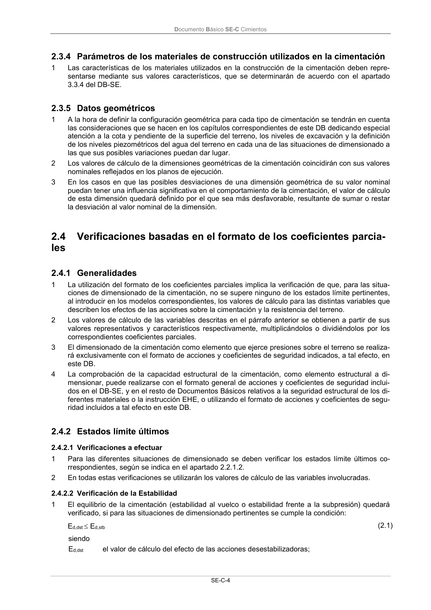

DB-SE-C · 2.4.1 Generalidades · versión 2019-12-20 · capa oficial
Formatos: JSON compacto · Markdown · PDF fuente
Ámbito del documento · texto del ámbito · documento y tablas
ID técnico a0028 · PDF pág. 9 · jerarquía no validada por persona · contrastado con el literal de la página 9 (candidato tipográfico); no validado por persona · padre: a0010
2.4.1 Generalidades 1 La utilización del formato de los coeficientes parciales implica la verificación de que, para las situa- ciones de dimensionado de la cimentación, no se supere ninguno de los estados límite pertinentes, al introducir en los modelos correspondientes, los valores de cálculo para las distintas variables que describen los efectos de las acciones sobre la cimentación y la resistencia del terreno. 2 Los valores de cálculo de las variables descritas en el párrafo anterior se obtienen a partir de sus valores representativos y característicos respectivamente, multiplicándolos o dividiéndolos por los correspondientes coeficientes parciales. 3 El dimensionado de la cimentación como elemento que ejerce presiones sobre el terreno se realiza- rá exclusivamente con el formato de acciones y coeficientes de seguridad indicados, a tal efecto, en este DB. 4 La comprobación de la capacidad estructural de la cimentación, como elemento estructural a di- mensionar, puede realizarse con el formato general de acciones y coeficientes de seguridad inclui- dos en el DB-SE, y en el resto de Documentos Básicos relativos a la seguridad estructural de los di- ferentes materiales o la instrucción EHE, o utilizando el formato de acciones y coeficientes de segu- ridad incluidos a tal efecto en este DB.

PDF fuente redistribuible: copia fiel enlazada en esta página (SHA256 verificado).